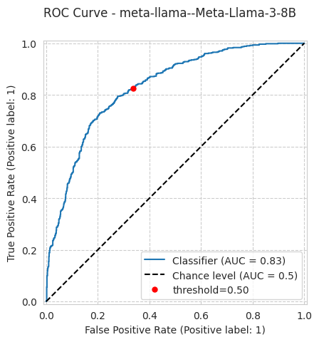
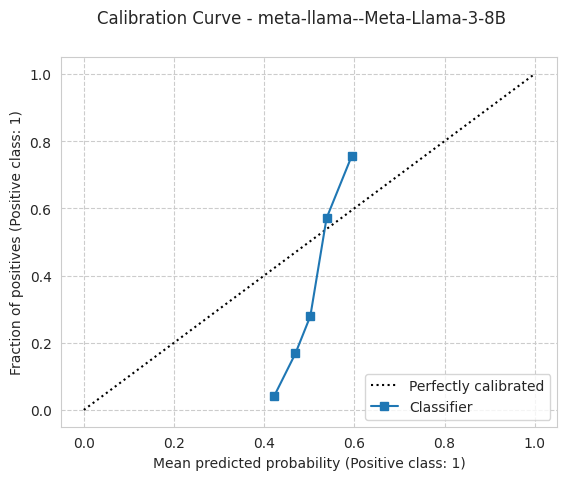
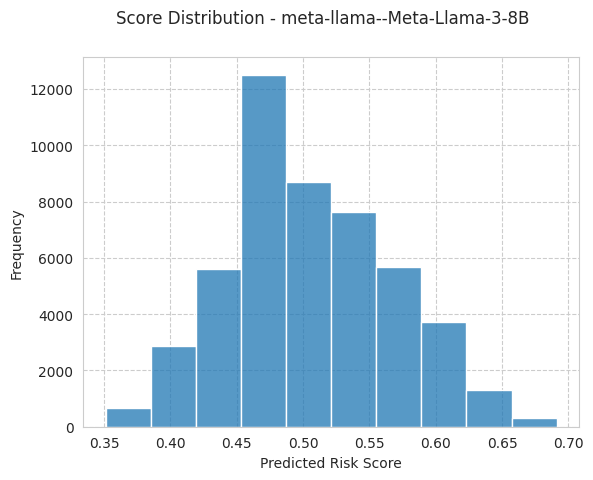
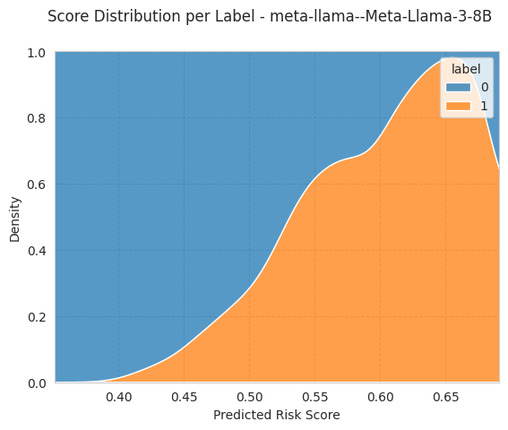
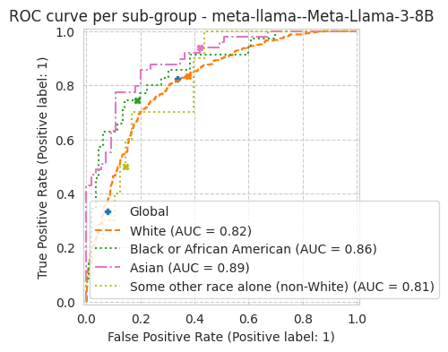
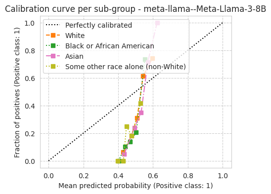

Evaluate model calibration using folktexts
Prerequisite: Install folktexts package. Follow setup guide in the README or install it locally by navigating to the root folder of the reppository and running > pip install -e .
Summary: The script loads a language model from Huggingface and demonstrates how to use folktexts to get insights into model calibration, and plot the benchmark results.
1. Check folktexts is installed
[1]:
import folktexts
folktexts.__version__
[1]:
'0.0.14'
2. Load Model from Huggingface
We use the Llama3-8B model for this demo. The workflow can similarly be applied to any model/tokenizer pair.
Set hf_model_identifier to the model’s name on huggingface or to the path to a saved pretrained model.
[2]:
from folktexts.llm_utils import load_model_tokenizer
# Note: make sure you have the necessary persmissions on Huggingface to download the model
# Note: use gpt2 for the demo if you need a smaller model
hf_model_identifier = "meta-llama/Meta-Llama-3-8B"
# hf_model_identifier = "gpt2"
model, tokenizer = load_model_tokenizer(hf_model_identifier)
Special tokens have been added in the vocabulary, make sure the associated word embeddings are fine-tuned or trained.
3. Create default benchmarking tasks
We generate ACSIncome benchmark using folktexts.
NOTE: We will subsample the reference data for faster runtime. This should be removed for obtaining reproducible reslts.
[3]:
from folktexts.benchmark import CalibrationBenchmark
# Note: this argument is optional. Omit, or set to 1 for reproducible benchmarking on the full data
subsampling_ratio = 0.01
bench = CalibrationBenchmark.make_acs_benchmark(
model= model,
tokenizer=tokenizer,
task_name="ACSIncome",
subsampling=subsampling_ratio,
)
WARNING:root:Received non-standard ACS argument 'subsampling' (using subsampling=0.01 instead of default subsampling=None). This may affect reproducibility.
Loading ACS data...
4. Run benchmark
Results will be saved in a folder RESULTS_DIR. There is * .json file contains evaluated metrics * .cvs file contains risk scores of each datapoint * folder called imgs/ contains figures
[4]:
# Note: folder should exist
RESULTS_DIR = "res"
bench.run(results_root_dir = RESULTS_DIR)
We detected that you are passing `past_key_values` as a tuple and this is deprecated and will be removed in v4.43. Please use an appropriate `Cache` class (https://huggingface.co/docs/transformers/v4.41.3/en/internal/generation_utils#transformers.Cache)
WARNING:root:Skipping group American Indian plot as it's too small.
WARNING:root:Skipping group Alaska Native plot as it's too small.
WARNING:root:Skipping group American Indian and Alaska Native tribes specified; or American Indian or Alaska Native, not specified and no other races plot as it's too small.
WARNING:root:Skipping group Native Hawaiian and Other Pacific Islander plot as it's too small.
WARNING:root:Skipping group Two or more races plot as it's too small.
[4]:
{'threshold': 0.5,
'n_samples': 1665,
'n_positives': 605,
'n_negatives': 1060,
'model_name': 'meta-llama--Meta-Llama-3-8B',
'accuracy': 0.7213213213213213,
'tpr': 0.824793388429752,
'fnr': 0.17520661157024794,
'fpr': 0.33773584905660375,
'tnr': 0.6622641509433962,
'balanced_accuracy': 0.7435287696865741,
'precision': 0.5822637106184364,
'ppr': 0.5147147147147147,
'log_loss': 0.6383789756326194,
'brier_score_loss': 0.22291120805170733,
'accuracy_ratio': 0.0,
'accuracy_diff': 1.0,
'fnr_ratio': 0.0,
'fnr_diff': 1.0,
'tnr_ratio': 0.0,
'tnr_diff': 1.0,
'ppr_ratio': 0.0,
'ppr_diff': 0.6634615384615384,
'tpr_ratio': 0.0,
'tpr_diff': 1.0,
'balanced_accuracy_ratio': 0.0,
'balanced_accuracy_diff': 1.0,
'fpr_ratio': 0.0,
'fpr_diff': 1.0,
'precision_ratio': 0.0,
'precision_diff': 1.0,
'equalized_odds_ratio': 0.0,
'equalized_odds_diff': 1.0,
'roc_auc': 0.8298308124122875,
'ece': 0.18116621586385906,
'ece_quantile': 0.22174805210202211,
'predictions_path': '/lustre/home/acruz/folktexts/notebooks/res/meta-llama--Meta-Llama-3-8B_bench-1043142216/ACSIncome_subsampled-0.01_seed-42_hash-1681264529.test_predictions.csv',
'config': {'chat_prompt': False,
'direct_risk_prompting': False,
'few_shot': None,
'reuse_few_shot_examples': False,
'batch_size': None,
'context_size': None,
'correct_order_bias': True,
'feature_subset': None,
'population_filter': None,
'seed': 42,
'model_name': 'meta-llama--Meta-Llama-3-8B',
'model_hash': 1521827555,
'task_name': 'ACSIncome',
'task_hash': 2612382143,
'dataset_name': 'ACSIncome_subsampled-0.01_seed-42_hash-1681264529',
'dataset_hash': 1681264529},
'plots': {'roc_curve_path': '/lustre/home/acruz/folktexts/notebooks/res/meta-llama--Meta-Llama-3-8B_bench-1043142216/imgs/roc_curve.pdf',
'calibration_curve_path': '/lustre/home/acruz/folktexts/notebooks/res/meta-llama--Meta-Llama-3-8B_bench-1043142216/imgs/calibration_curve.pdf',
'score_distribution_path': '/lustre/home/acruz/folktexts/notebooks/res/meta-llama--Meta-Llama-3-8B_bench-1043142216/imgs/score_distribution.pdf',
'score_distribution_per_label_path': '/lustre/home/acruz/folktexts/notebooks/res/meta-llama--Meta-Llama-3-8B_bench-1043142216/imgs/score_distribution_per_label.pdf',
'roc_curve_per_subgroup_path': '/lustre/home/acruz/folktexts/notebooks/res/meta-llama--Meta-Llama-3-8B_bench-1043142216/imgs/roc_curve_per_subgroup.pdf',
'calibration_curve_per_subgroup_path': '/lustre/home/acruz/folktexts/notebooks/res/meta-llama--Meta-Llama-3-8B_bench-1043142216/imgs/calibration_curve_per_subgroup.pdf'}}
4. Visualize results
We can also visualize the results inline:
[5]:
bench.plot_results()





WARNING:root:Skipping group American Indian plot as it's too small.
WARNING:root:Skipping group Alaska Native plot as it's too small.
WARNING:root:Skipping group American Indian and Alaska Native tribes specified; or American Indian or Alaska Native, not specified and no other races plot as it's too small.
WARNING:root:Skipping group Native Hawaiian and Other Pacific Islander plot as it's too small.
WARNING:root:Skipping group Two or more races plot as it's too small.

[5]:
{'roc_curve_path': '/lustre/home/acruz/folktexts/notebooks/res/meta-llama--Meta-Llama-3-8B_bench-1043142216/imgs/roc_curve.pdf',
'calibration_curve_path': '/lustre/home/acruz/folktexts/notebooks/res/meta-llama--Meta-Llama-3-8B_bench-1043142216/imgs/calibration_curve.pdf',
'score_distribution_path': '/lustre/home/acruz/folktexts/notebooks/res/meta-llama--Meta-Llama-3-8B_bench-1043142216/imgs/score_distribution.pdf',
'score_distribution_per_label_path': '/lustre/home/acruz/folktexts/notebooks/res/meta-llama--Meta-Llama-3-8B_bench-1043142216/imgs/score_distribution_per_label.pdf',
'roc_curve_per_subgroup_path': '/lustre/home/acruz/folktexts/notebooks/res/meta-llama--Meta-Llama-3-8B_bench-1043142216/imgs/roc_curve_per_subgroup.pdf',
'calibration_curve_per_subgroup_path': '/lustre/home/acruz/folktexts/notebooks/res/meta-llama--Meta-Llama-3-8B_bench-1043142216/imgs/calibration_curve_per_subgroup.pdf'}